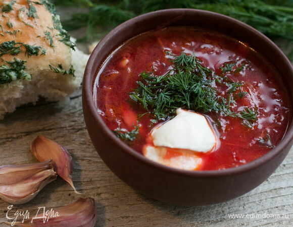

Борщ

Описание
Для борща я советую брать исключительно сладкую, темно-красную свеклу. Чеснока я тоже не жалею. Всегда тру его на терке,
а добавляю в самом конце, когда борщ уже снят с огня. Не забудьте и о болгарском перце, с ним борщ будет еще вкуснее.
Ингредиенты
- Свекла-1 шт
- Картофель-4 шт
- Капуста белокочанная-300 гр
- Перец болгарский-2 шт
- Лук репчатый-1 шт
- Чеснок-5 зубчиков
- Морковь-1 шт
- Помидоры-3 шт
- Томатная паста-3 ст.л.
Шаги по приготовлению
- Сварите любой мясной бульон привычным способом: говяжий или куриный. Понадобится 1,5–2 л.
- Натрите свеклу и морковь на крупной терке, положите овощи в сковороду с небольшим количеством масла, добавьте 0,5
стакана воды и тушите, закрыв крышкой, до готовности.
- Выньте мясо из бульона, отложите в сторону (оно еще пригодится), а кастрюлю с бульоном верните на плиту.
- Картофель нарежьте мелким кубиком, капусту нашинкуйте соломкой.
- Добавьте овощи в кастрюлю, варите на среднем огне. Если капуста не очень жесткая, то добавьте ее позже картофеля.
Посолите, добавьте 2 вида перцев и кориандр.
- В большую кастрюлю добавьте тушеную свеклу и морковь.
- Болгарский перец нарежьте соломкой, потушите на растительном масле. Через 5 минут добавьте мелко нарезанный лук.
Помидоры очистите от кожицы, нарежьте мелко и добавьте к луку и перцу. Когда овощи станут мягкими, добавьте томатную
пасту, разведенную водой (или бульоном) и тушите еще 3 минуты.
- Овощи готовы, добавьте их в общую кастрюлю, доведите содержимое до кипения.
- Натрите на мелкой терке чеснок, скатайте из него шарик и положите в борщ. Это нужно для того, чтобы чеснок не сразу
сварился.
- Разделите мясо на кусочки, добавьте их в борщ. Дайте супу настояться не менее 20 минут. Зелень укропа добавьте перед
подачей.
- Подавайте борщ со сметаной, салом и хлебом. Приятного аппетита!